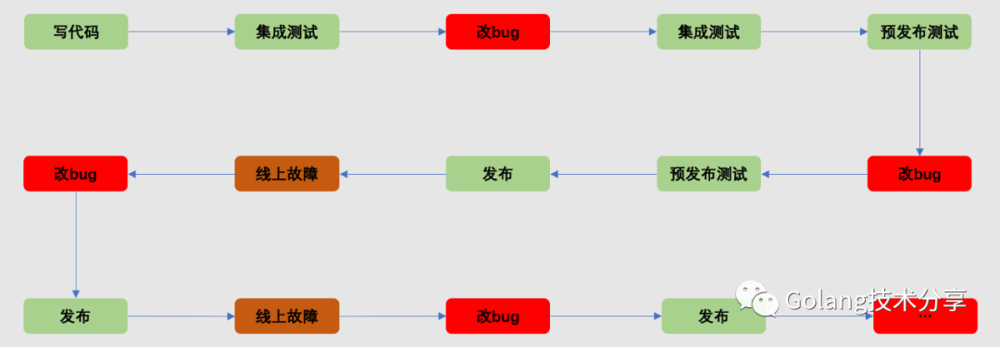
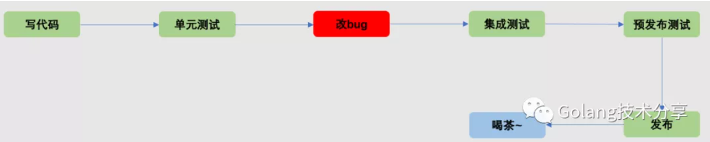
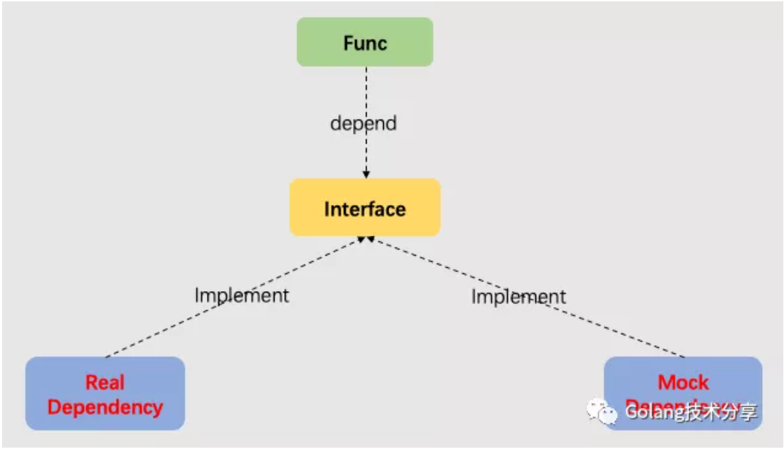
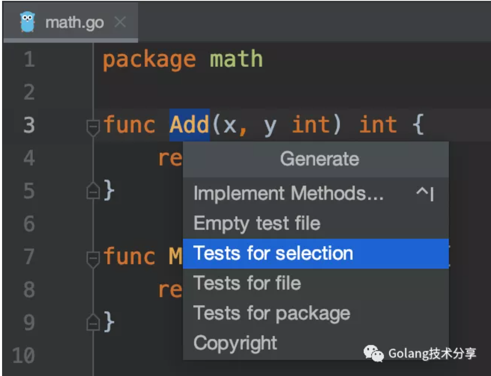
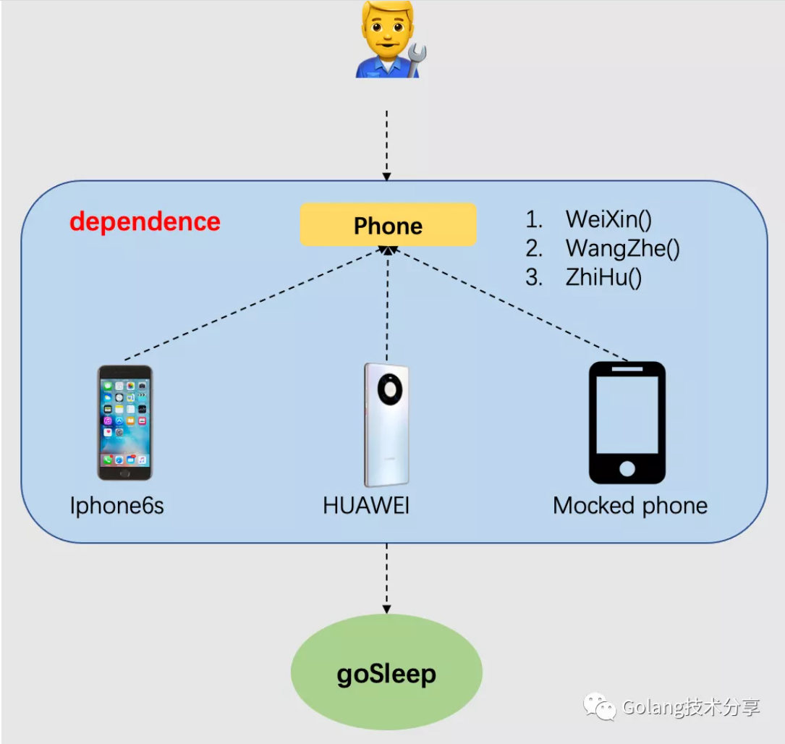

如何有效地测试Go代码
单元测试
如果把开发程序比作盖房子，那么我们必须确保所有的用料都是合格的，否则盖起来的房子就会存在问题。对于程序而言，我们可以将盖房子的砖头、钢筋、水泥等当做一个个功能单元，如果每个单元是合格的，我们将有信心认为程序是健壮的。单元测试（Unit Test,UT）就是检验功能单元是否合格的工具。
一个没有UT的项目，它的代码质量与工程保证是堪忧的。但在实际开发工作中，很多程序员往往并不写测试代码，他们的开发周期可能如下图所示。

而做了充分UT的程序员，他们的项目开发周期更大概率如下。

项目开发中，不写UT也许能使代码交付更快，但是我们无法保证写出来的代码真的能够正确地执行。写UT可以减少后期解决bug的时间，也能让我们放心地使用自己写出来的代码。从长远来看，后者更能有效地节省开发时间。
既然UT这么重要，是什么原因在阻止开发人员写UT呢？这是因为除了开发人员的惰性习惯之外，编写UT代码同样存在难点。
- 代码耦合度高，缺少必要的抽象与拆分，以至于不知道如何写UT。
- 存在第三方依赖，例如依赖数据库连接、HTTP请求、数据缓存等。
可见，编写可测试代码的难点就在于解耦与依赖。
接口与Mock
对于难点1，我们需要面向接口编程。在《接口Interface——塑造健壮与可扩展的Go应用程序》一文中，我们讨论了使用接口给代码带来的灵活解耦与高扩展特性。接口是对一类对象的抽象性描述，表明该类对象能提供什么样的服务，它最主要的作用就是解耦调用者和实现者，这成为了可测试代码的关键。
对于难点2，我们可以通过Mock测试来解决。Mock测试就是在测试过程中，对于某些不容易构造或者不容易获取的对象，用一个虚拟的对象来创建以便测试的测试方法。
如果我们的代码都是面向接口编程，调用方与服务方将是松耦合的依赖关系。在测试代码中，我们就可以Mock 出另一种接口的实现，从而很容易地替换掉第三方的依赖。

测试工具
1. 自带测试库：testing
在介绍Mock测试之前，先看一下Go中最简单的测试单元应该如何写。假设我们在math.go文件下有以下两个函数，现在我们需要对它们写测试案例。
1 | 1package math |
如果我们的IDE是Goland，它有一个非常好用的一键测试代码生成功能。

如上图所示，光标置于函数名之上，右键选择 Generate，我们可以选择生成整个package、当前file或者当前选中函数的测试代码。以 Tests for selection 为例，Goland 会自动在当前 math.go 同级目录新建测试文件math_test.go，内容如下。
1 | 1package math |
可以看到，在Go测试惯例中，单元测试的默认组织方式就是写在以 _test.go 结尾的文件中，所有的测试方法也都是以 Test 开头并且只接受一个 testing.T 类型的参数。同时，如果我们要给函数名为 Add 的方法写单元测试，那么对应的测试方法一般会被写成 TestAdd 。
当测试模板生成之后，我们只需将测试案例添加至 TODO 即可。
1 | 1 { |
此时，运行测试文件，可以发现所有测试案例，均成功通过。
1 | 1=== RUN TestAdd |
2. 断言库：testify
简单了解了Go内置 testing 库的测试写法后，推荐一个好用的断言测试库：testify。testify具有常见断言和mock的工具链，最重要的是，它能够与内置库 testing 很好地配合使用，其项目地址位于https://github.com/stretchr/testify。
如果采用testify库，需要引入"github.com/stretchr/testify/assert"。之外，上述测试代码中以下部分
1 | 1 if got := Add(tt.args.x, tt.args.y); got != tt.want { |
更改为如下断言形式
1 | 1 assert.Equal(t, Add(tt.args.x, tt.args.y), tt.want, tt.name) |
testify 提供的断言方法帮助我们快速地对函数的返回值进行测试，从而减少测试代码工作量。它可断言的类型非常丰富，例如断言Equal、断言NIl、断言Type、断言两个指针是否指向同一对象、断言包含、断言子集等。
不要小瞧这一行代码，如果我们在测试案例中，将”positive + positive”的期望值改为3，那么测试结果中会自动提供报错信息。
1 | 1... |
3. 接口mock框架：gomock
介绍完基本的测试方法的写法后，我们需要讨论基于接口的 Mock 方法。在Go语言中，最通用的 Mock 手段是通过Go官方的 gomock 框架来自动生成其 Mock 方法。该项目地址位于https://github.com/golang/mock。
为了方便读者理解，本文举一个小明玩手机的例子。小明喜欢玩手机，他每天都需要通过手机聊微信、玩王者、逛知乎，如果某天没有干这些事情，小明就没办法睡觉。在该情景中，我们可以将手机抽象成接口如下。
1 | 1// mockDemo/equipment/phone.go |
小明手上有一部非常老的IPhone6s，我们为该手机对象实现Phone接口。
1 | 1// mockDemo/equipment/phone6s.go |
接着，我们定义Person对象用来表示小明，并定义Person对象的生活函数dayLife和入睡函数goSleep。
1 | 1// mockDemo/person.go |
最后，我们把小明和iphone6s对象实例化出来，并开启他一天的生活。
1 | 1//mockDemo/main.go |
由于小明每天必须刷完手机才能睡觉，即Person.goSleep，那么小明能否睡觉依赖于手机。

按照当前代码，如果小明的手机坏了，或者小明换了一个手机，那他就没办法睡觉了，这肯定是万万不行的。因此我们需要把小明对某特定手机的依赖Mock掉，这个时候 gomock 框架排上了用场。
如果没有下载gomock库，则执行以下命令获取
1 | 1GO111MODULE=on go get github.com/golang/mock/mockgen |
通过执行以下命令对phone.go中的Phone接口Mock
1 | 1mockgen -destination equipment/mock_iphone.go -package equipment -source equipment/phone.go |
在执行该命令前，当前项目的组织结构如下
1 | 1. |
执行mockgen命令之后，在equipment/phone.go的同级目录，新生成了测试文件 mock_iphone.go（它的代码自动生成功能，是通过Go自带generate工具完成的，感兴趣的读者可以阅读《Go工具之generate》一文），其部分内容如下
1 | 1... |
此时，我们的person.go中的 Person.dayLife 方法就可以测试了。
1 | 1func TestPerson_dayLife(t *testing.T) { |
对接口进行Mock，可以让我们在未实现具体对象的接口功能前，或者该接口调用代价非常高时，也能对业务代码进行测试。而且在开发过程中，我们同样可以利用Mock对象，不用因为等待接口实现方实现相关功能，从而停滞后续的开发。
在这里我们能够体会到在Go程序中接口对于测试的重要性。没有接口的Go代码，单元测试会非常难写。所以，如果一个稍大型的项目中，没有任何接口，那么该项目的质量一定是堪忧的。
4. 常见三方mock依赖库
在上文中提到，因为存在某些存在第三方依赖，会让我们的代码难以测试。但其实已经有一些比较成熟的mock依赖库可供我们使用。由于篇幅原因，以下列出的一些mock库将不再贴出示例代码，详细信息可通过对应的项目地址进行了解。
- go-sqlmock
这是Go语言中用以测试数据库交互的SQL模拟驱动库，其项目地址为 https://github.com/DATA-DOG/go-sqlmock。它而无需真正地数据库连接，就能够在测试中模拟sql驱动程序行为，非常有助于维护测试驱动开发（TDD）的工作流程。
- httpmock
用于模拟外部资源的http响应，它使用模式匹配的方式匹配 HTTP 请求的 URL，在匹配到特定的请求时就会返回预先设置好的响应。其项目地址为 https://github.com/jarcoal/httpmock 。
- gripmock
它用于模拟gRPC服务的服务器，通过使用.proto文件生成对gRPC服务的实现，其项目地址为 https://github.com/tokopedia/gripmock。
- redismock
用于测试与Redis服务器的交互，其项目地址位于 https://github.com/elliotchance/redismock。
5. 猴子补丁：monkey patch
如果上述的方案都不能很好的写出测试代码，这时可以考虑使用猴子补丁。猴子补丁简单而言就是属性在运行时的动态替换，它在理论上可以替换运行时中的一切函数。这种测试方式在动态语言例如Python中比较合适。在Go中，monkey库通过在运行时重写正在运行的可执行文件并插入跳转到您要调用的函数来实现Monkey patching。项目作者写道：这个操作很不安全，不建议任何人在测试环境之外进行使用。其项目地址为https://github.com/bouk/monkey。
monkey库的API比较简单，例如可以通过调用 monkey.Patch(<target function>, <replacement function>)来实现对函数的替换，以下是操作示例。
1 | 1package main |
需要注意的是，如果启用了内联，则monkey有时无法进行patching，因此，我们需要尝试在禁用内联的情况下运行测试。例如以上例子，我们需要通过以下命令执行。
1 | 1$ go build -o main -gcflags=-l main.go;./main |
总结
在项目开发中，单元测试是重要且必须的。对于单元测试的两大难点：解耦与依赖，我们的代码可以采用 面向接口+mock依赖 的方式进行组织，将依赖都做成可插拔的，那在单元测试里面隔离依赖就是一件水到渠成的事情。
另外，本文讨论了一些实用的测试工具，包括自带测试库testing的快速生成测试代码，断言库testify的断言使用，接口mock框架gomock如何mock接口方法和一些常见的三方依赖mock库推荐，最后再介绍了测试大杀器猴子补丁，当然，不到万不得已，不要使用猴子补丁。
最后，在这些测试工具的使用上，本文的内容也只是一些浅尝辄止的介绍，希望读者能够在实际项目中多写写单元测试，深入体会TDD的开发思想。